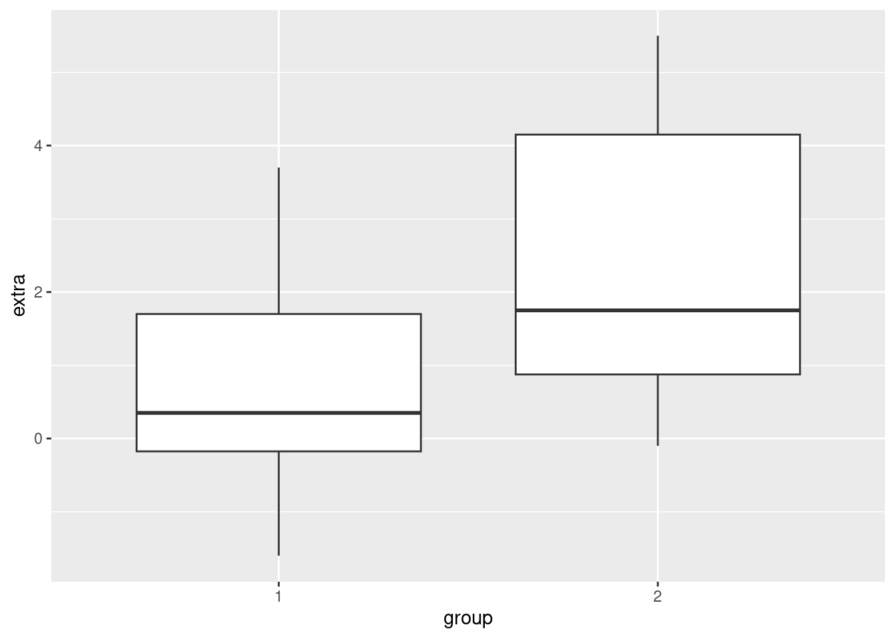
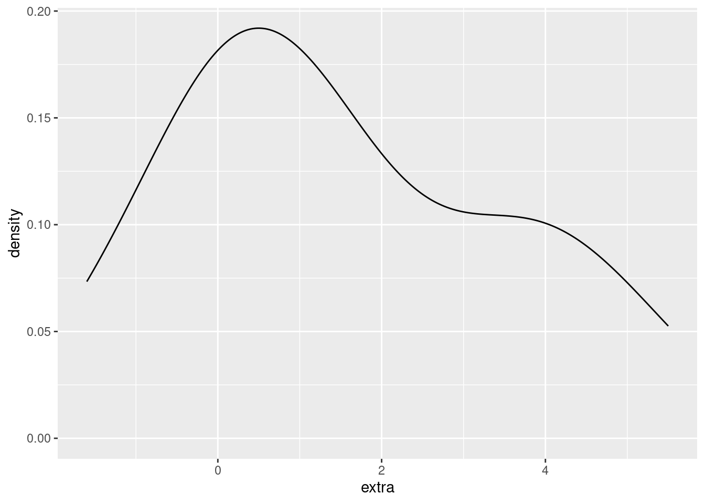
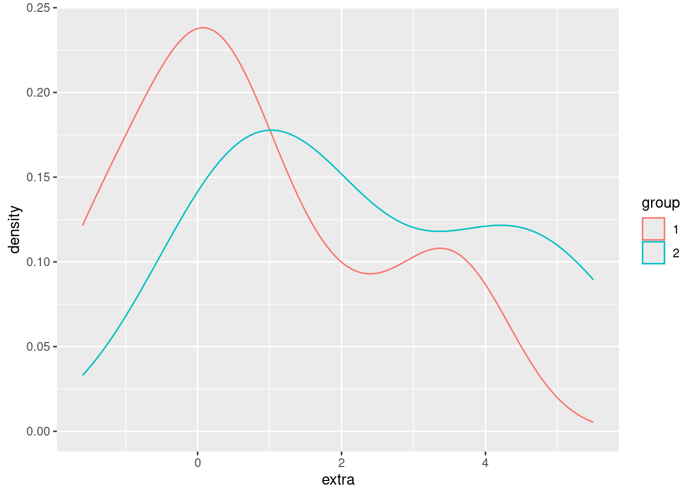
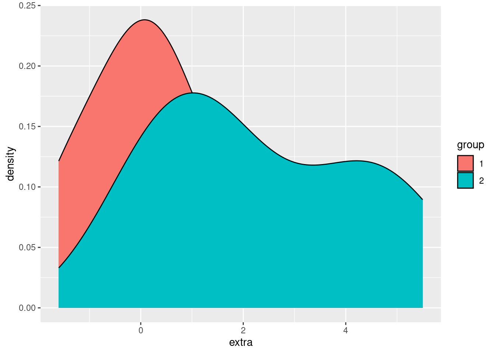
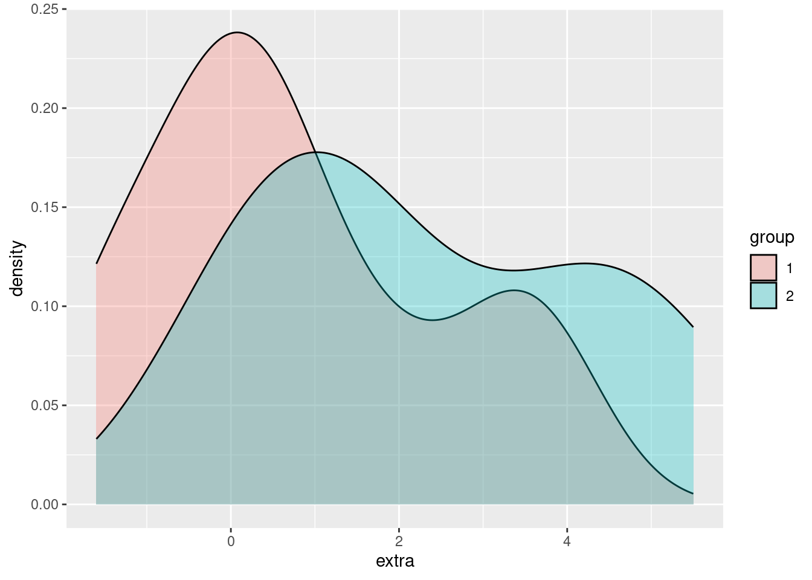
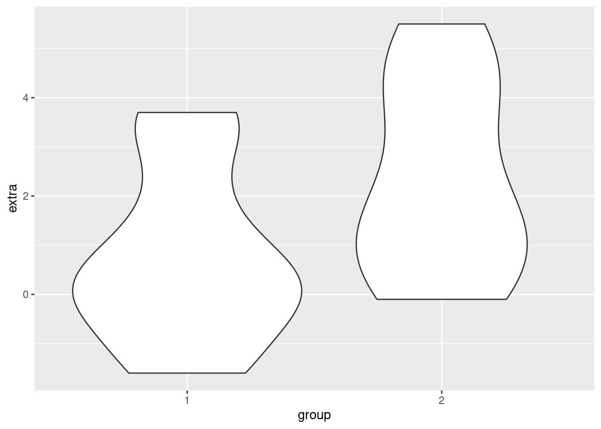
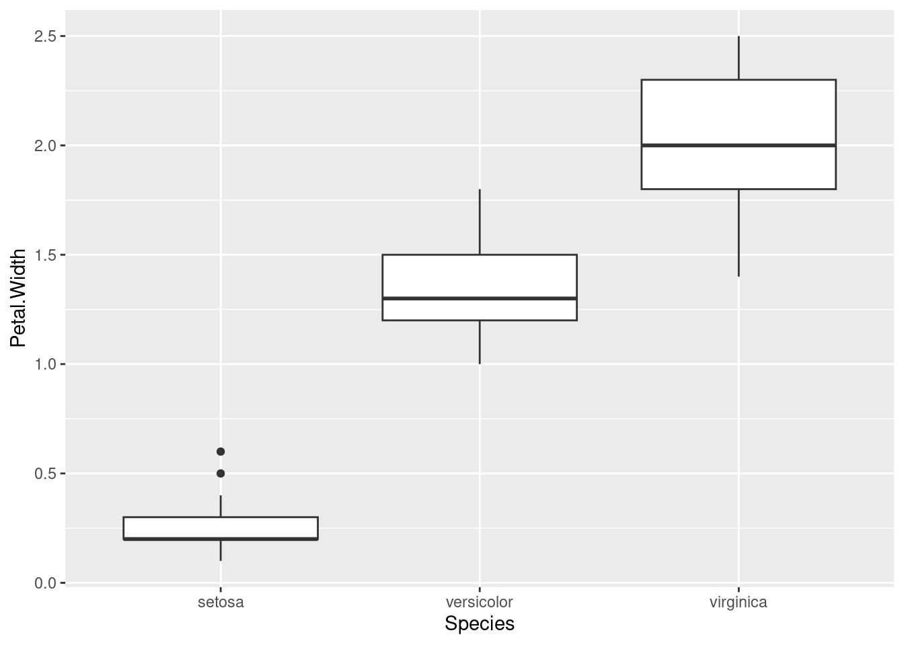
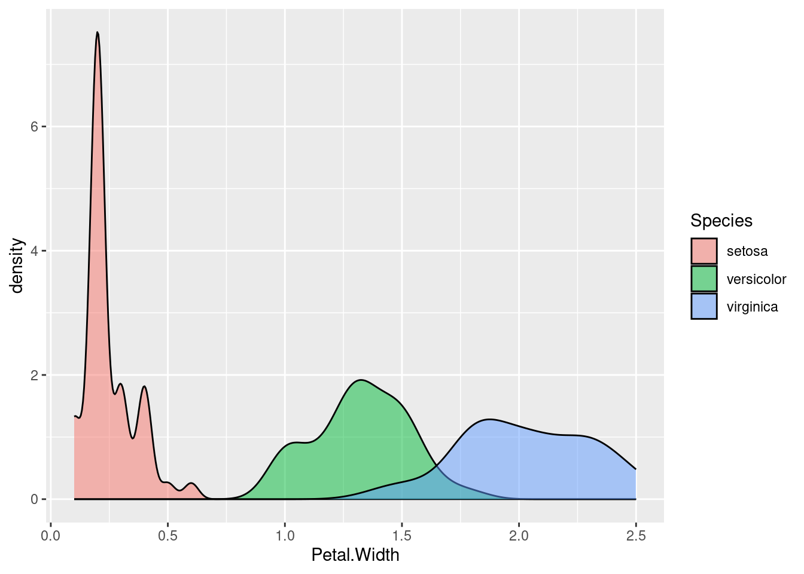
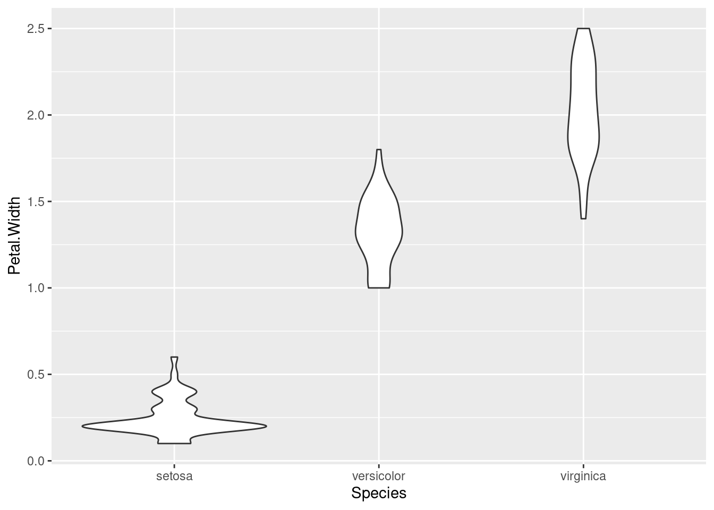
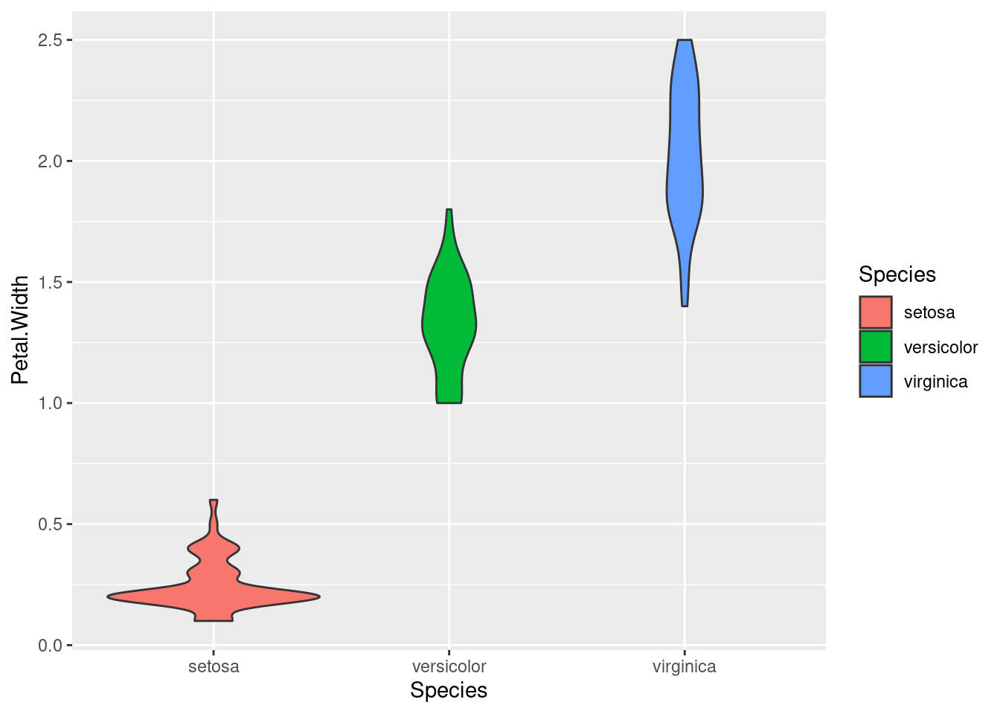

library(ggplot2)Boxplots and Violinplots in R
What’s in this tutorial?
In this short guide, we will go over how to create a few basics plots to visualize data relationships when you have one continuous (or interval) variable, and one categorical variable. This includes boxplots and violin plots.
We will also use this opportunity to examine how to use the color and fill properties in ggplot2 graphs.
Loading data and packages
We only need to load the ggplot2 package for this tutorial.
We will examine two of R’s built-in data sets, sleep and iris.
Boxplots
As we briefly demonstrated in the Unit 3 reading, boxplots (aka “box-and-whiskers” plots) are a useful tool for visualizing data when you have one continuous variable and one (or possibly more) categorical variable(s).
A single boxplot is essentially a visualization of the quartiles of a variable. The “whiskers” typically show the minimum and maximum values, and the “box” shows the other quartiles, where the lower edge of the box is the 25% quantile, the line in the middle of the box is the 50% quantile (aka median), and the upper edge of the box is the 75% quantile.
In R, if there are extreme values, those are sometimes represented as dots outside the whiskers. If you see this happening, then instead of the minimum/maximum, the length of the whisker is 1.5 times the “interquartile range” (IQR), which is the distance between the 25% and 75% quantiles (which is the length of the “box”).
In the sleep data, the extra variable is continuous, and the group variable is categorical. We can use boxplots to easily compare the difference in extra sleep between the groups, by displaying one boxplot for the values in group 1 and another boxplot for the values in group 2. This is easy in ggplot2, because we will still use x and y coordinates, just like in a scatterplot, but instead of geom_point, we can use geom_boxplot.
ggplot(sleep, aes(x = group, y = extra)) + geom_boxplot()
The nice thing about boxplots is that they don’t require you to aggregrate your data (like computing averages to put into bar plots would), and they very quickly give you a visual comparison of values that are in different categories, including some distribution information. In other words, not only do you get a quick visual on how the groups are different, you can also see how they overlap, and how they are distributed.
Limitations
However, boxplots also have a few limitations. They were actually invented by John Tukey as a technique for visualizing data by hand. That is, with just a pencil, some graph paper, and some numbers, you can construct a boxplot even without a computer. Because they were designed to be simple, one drawback is that they convey very limited distributional information.
In other words, just as we discussed in Unit 2 that histograms and density plots gave better distributional information than just a summary of quartiles, boxplots are limited because they only plot the quartiles.
Splitting density plots into groups
One possible solution is to plot density plots for each group. Fortunately, ggplot2 makes it easy to plot superimposed density plots for different groups.
For example, here’s a density plot of the extra variable in the sleep data:
ggplot(sleep, aes(extra)) + geom_density()
We would like to modify this to show a different density plot for each of the two groups in the data, ideally side-by-side in order to compare them. We can do that simply by assigning the (line) color of the density plot to the group variable.
ggplot(sleep, aes(extra)) + geom_density(aes(color = group))
We can also use fill in ggplot2 graphs, in order to change the “fill color” of a graphical shape:
ggplot(sleep, aes(extra)) + geom_density(aes(fill = group))
Using fill makes it easier to compare and distinguish the two distributions, but right now we have another example of overplotting, since the group 2 density is “covering up” part of the group 1 density. Returning to our strategies for handling overplotting, jittering doesn’t make much sense here, but changing the alpha (opacity) does:
ggplot(sleep, aes(extra)) + geom_density(aes(fill = group), alpha = .3)
In this way, we can easily visualize and compare the two groups, with more fine-grained information about the distributions in those groups than we can get with a simple boxplot.
Pros and cons of density plots
The advantage that density plots have over boxplots is that they give us much more detailed distributional information. For example, just looking at a boxplot doesn’t really tell you if the continuous variable is normally distributed, or bimodel, or what.
However, if you have a lot of categories that you are comparing, overlapping density plots like this can get very hard to read.
Violin plots
Violin plots are an attempt to essentially combine boxplots and density plots, to try to get the advantages of both. What they show are density plots, but they are “mirrored” back-to-back for each group. This is where the “violin” term comes from, because I guess for someone who doesn’t look at a lot of real violins, this mirrored density shape resembles a violin-like shape. These “violins” can then be plotted next to each other, like boxplots. Let’s see what this look like for the sleep data:
ggplot(sleep, aes(group, extra)) + geom_violin()
In short, you can think of violin plots sort of as “more fine-grained boxplots.” Sometimes we might still prefer boxplots for their visual simplicity, but violin plots are a good additional tool to consider when you are visualizing differences between groups.
Re-capping and reviewing with iris
Here we just show additional examples of these methods, using the iris data, which has more observations than the sleep data. In other words, looking at densities and violin plots when you only have 10 data points per group may be a little questionable, so let’s look at a slightly larger data set. There are 50 observations per Species in the iris data, which makes looking at densities a little more meaningful.
Boxplot of iris data
So here’s a boxplot looking at how the different Species have different values for the Petal.Width variable:
ggplot(iris, aes(Species, Petal.Width)) + geom_boxplot()
Density plots
Here’s the same data, just with (overlapping) density plots:
ggplot(iris, aes(Petal.Width)) + geom_density(aes(fill = Species), alpha = .5)
Violin plot
And finally, here’s another look at the same data, this time using a violin plot:
ggplot(iris, aes(Species, Petal.Width)) + geom_violin()
Which of these do you like the best? In my opinion, each of these techniques has their place and purpose, and all can be useful.
Adding color
Note that in the density plots, we were using color/fill to split the data into groups by Species. We don’t need color in the boxplot or violin plot, since we are splitting them along the x-axis. But if you want color, you can always add it! Here’s an example of the same violin plot above, just adding color by mapping fill to Species:
ggplot(iris, aes(Species, Petal.Width)) + geom_violin(aes(fill = Species))
Summary
Here we’ve gone through three basic techniques for visualizing data. What they have in common is that they are useful for comparing groups, which is essentially a way of examining the relationship between a continuous (or interval) variable and a categorical variable (the “grouping” variable).
Which of these techniques is best for a given situation depends on a lot of factors, including personal taste. But they all have their uses.